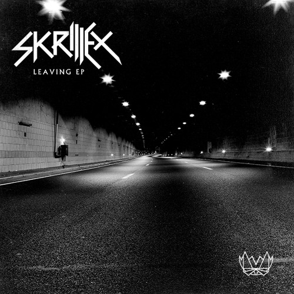

Sonny John Moore, mais conhecido como Skrillex (seu nome artistico) (Los Angeles, 15 de janeiro de 1988), é um produtor musical norte americano de música eletrônica do gênero dubstep e trap, cantor e compositor. Criado na região nordeste de Los Angeles e no norte da Califórnia, Skrillex foi um integrante da banda de post-hardcore From First to Last como vocalista em 2004, e gravou dois álbuns de estúdio com o grupo;"Dear Diary, My Teen Angst Has a Body Count", 2004, e "Heroine" em 2006, antes de sair em 2007 para seguir carreira solo. Ele começou sua primeira turnê como artista solo no final de 2007. Depois se tornar DJ e adotar seu nome artístico, Skrillex.
Viajou na excursão Alternative Press Tour apoiando bandas como All Time Low e The Rocket Summer, e apareceu na capa da Alternative Press anual das 100 Bandas Que Você Precisa Conhecer.
Em 2009, lançou o EP "Gypsyhook", o primeiro solo. Lançou em 2010, gratuitamente no MySpace o EP "My Name Is Skrillex", com o seu novo nome. Depois lançou mais dois EPs, em Outubro de 2010 lançou "Scary Monsters and Nice Sprites" e em Junho de 2011 "More Monsters and Sprites", ambos conseguiram aparecer em várias paradas musicais.
Em 30 de novembro de 2011, ele foi indicado a cinco categorias no 54º Grammy Award, incluindo "Artista Revelação", e ganhou três, Melhor Álbum Dance/eletrônica", "Melhor Gravação Dance" e "Melhor Gravação Remix, não-clássica".
Depois de suas indicações no Grammy, Skrillex expandiu seu sucesso e ao lançar o quinto EP intitulado "Bangarang", aumentou a venda de seus EPs e entrou em diversos charts mundiais.
| Capa | Nome | Ano |
|---|---|---|
| My Name is Skrillex | 2010 | |
| Scary Monsters and Nice Sprites | 2010 | |
| More Monsters and Sprites | 2011 | |
| Bangarang | 2011 | |
|  | Leaving | 2013 |